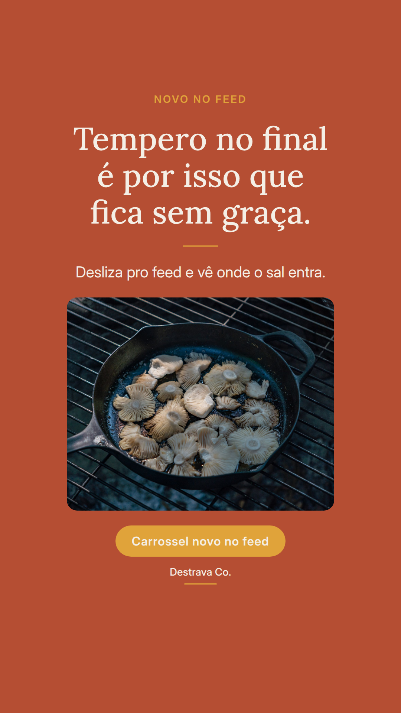
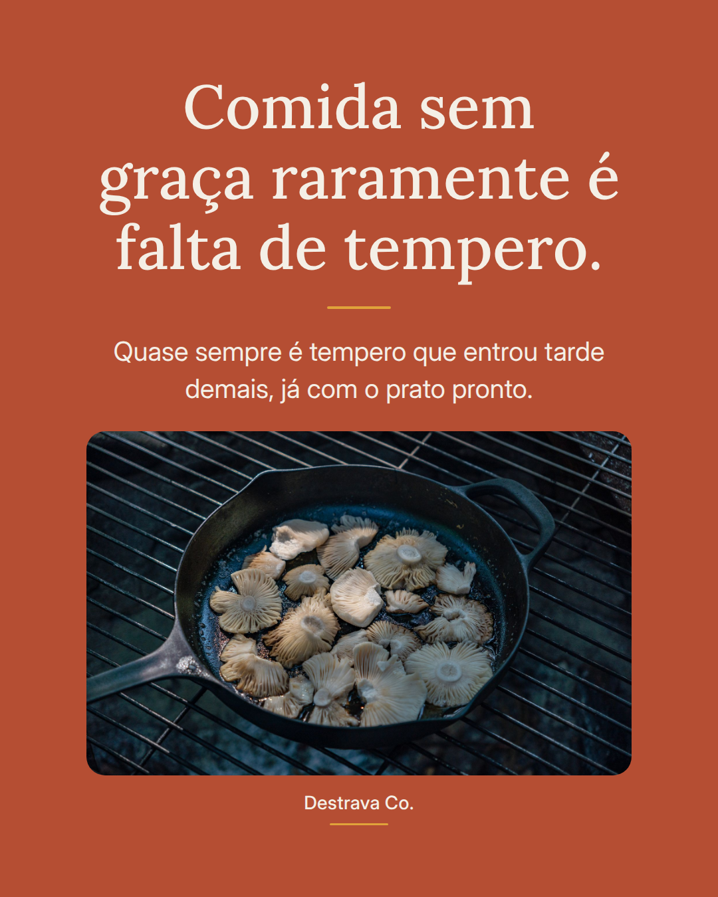

Tempero jogado só no prato pronto é o motivo de muita comida boa ficar sem graça.
Sal na água do arroz, uma pitada no refogado logo no começo, ajuste no fim depois de provar. É a mesma receita de sempre, só que com sabor em camadas.
E três detalhes que mudam o jantar: alho no óleo ainda morno, erva seca no refogado e erva fresca no final, um fio de limão ou vinagre na hora de servir.
Nada disso toma tempo a mais. Só muda a ordem.
Salva pra lembrar na próxima panela e manda pra quem vive dizendo que cozinha mal. Se quiser o jantar já resolvido, o PDF com 20 receitas rápidas até 15 min está esperando por você.